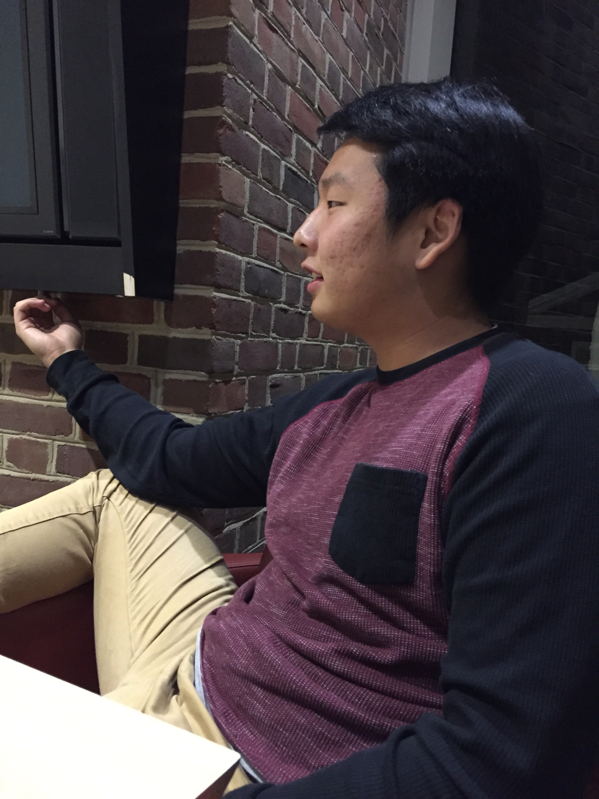

Do you remember the first time we met? I don't exactly remember the first time... but I rememeber one of the first times I met you was at Rice. I had went to the gym and Hana told me to stop by. I had no idea you were there. But you bought us wings and I probably thought who is this third year scheming on all these girls? LOL We had a nice conversation and I think that I thought you were a cool dude. Thanks for the first wings over I ever had. Actually, thinking about it, do you remember when you hit a car or something while parking? I remember I was with Andy, and we saw you at Alderman parking lot, and Andy was making fun of you for bumping a car. haha that was kinda funny
Do you remember that night when you invited Heamin and I to your house? We baked cookies and discussed whatever the heck a hymen was... LOL I was kinda scarred that night cuz Tyler kept looking up pictures... but I think that was the first time I ever went over to your place. Who knew I'd be Tyler's new roommate? Do you remember when we went to the movies for the first time? I think we saw hunger games with Hana and Andy and Anthony. (shoutout to Anthony for setting this whole thing up and teaching me how to code... It is quite fun hehe) I was so excited to see it, I think I dragged you guys to watch it. Do you remember that one night I spent all night studying at your place? You probably won't remember this one cuz I think you were kinda tired. I was coming from my volunteering shift and it was like a quarter past midnight. I was walking up those stairs of death at Dillard (do you remmeber you hated those stairs). You called and asked me if I wanted to study with Hana and Stephen at your place. Man, now that I think about it, Hana used to hang out with us a lot. Remember when you told me that you were close with all of us in our family except for Brenda? lol I thought it was only natural that we would be close then. But I remember you made Hana drive your car to pick me up. You made us ramen and we "studied" for hours.
Do you remember your car? My car? How did we have the exact same car? You let me drive your car one time and I felt like I was driving my own car. I miss that car. Do you remember when you asked me to take teaching as a profession? I don't think it took much convincing for me to enroll in that class. But I knew that I was taking motor development, and when you told me that you might be taking that class as well, I was really excited! Who knew that those classes would change my entire Spring semester... Do you remember finals week? Everyone was "studying" at PLSB. You asked me if I wanted to go to cookout. I think I said I couldn't cuz I had to study. But I asked you to bring me a corndog, half as a joke. But you actually had brought me one! With honey mustard! If you hadn't brought the honey mustard, we might have been dated... LOL